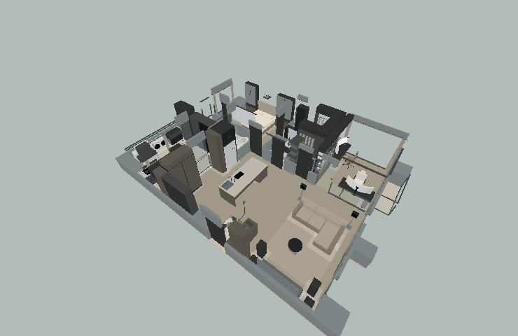
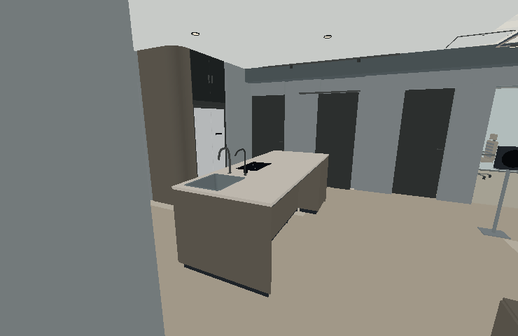
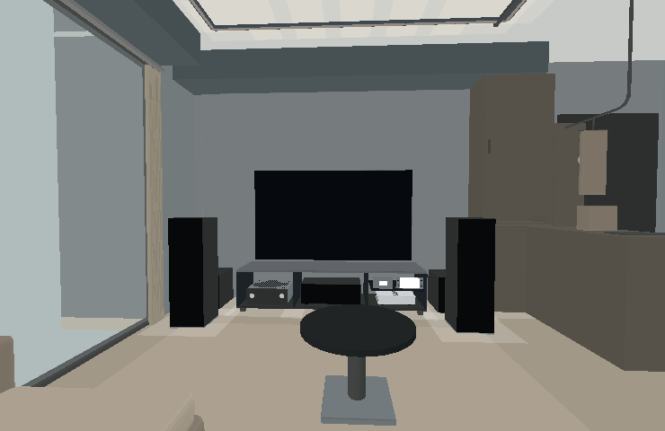
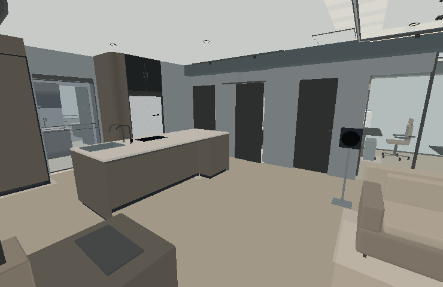
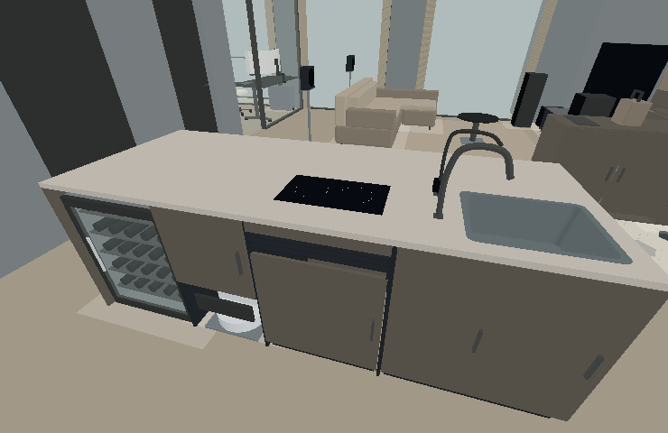
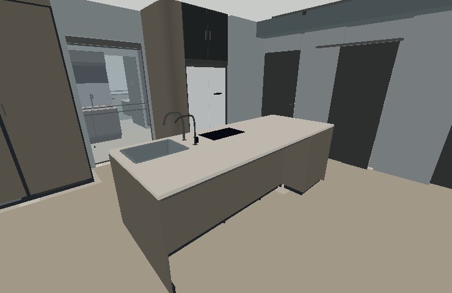
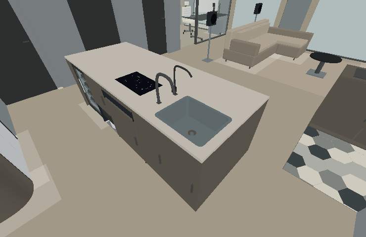
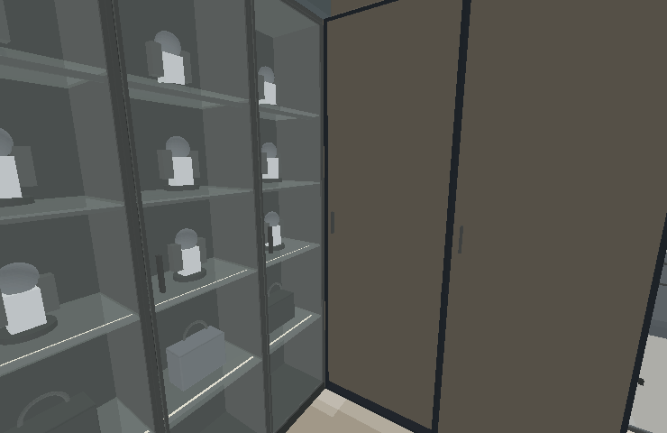

全屋配置鳥瞰

固定電視移到南牆，客廳朝南；原收藏室打開，廚房牆與結構柱保留。
原 A 方案正式命名為「V4 大中島」：收藏室拆開、電視放南牆、沙發朝南，中央留下280×110×高95cm的長中島。V1、V2、V3 可隨時切回。
以下由實際3D網格離線產生，用於檢查比例、接口與視線；不含貼圖、反射及正式光照。深色直紋木皮、石材、人字拼木地板與玄關六角磚，請在可操作3D查看。

固定電視移到南牆，客廳朝南；原收藏室打開，廚房牆與結構柱保留。

完整木皮中島端面，柱前120.1cm；中央不再有旋轉架。

83吋電視中心高100cm，主座約347cm；Q6、PS5 Pro、Switch 2與擴大機在195×55影音底櫃，雙Q7與兩顆重低音留在南側。

沙發後環繞有落地支撐；往書房需繞過外開玻璃門，勿把關門淨距當作開門後通道。

由北至南為酒櫃、掃地機、IH及濕區。檯高95cm，四個分艙具實際側板、層板及門縫。

東側約33×205cm留膝；在設備控制可加入／收起兩張活動椅，步行會避開椅子。

內槽50×40、深20cm；真實開孔、薄邊、排水與獨立飲水龍頭。CLAR主機與排水分開。

165×40玻璃櫃、155×60深收納沿牆接齊；玻璃門可開，櫃尾轉角封閉。
保留13個導航空間、24個設備模型及共用家具清單；室內步行、平面導覽、廚房電動門、房門／櫃門互動、6組窗簾、RGB、日夜亮度、升降茶几、Switch 2定位與檯下設備檢視都沿用。天花四聲道避開目前樑與冷氣端末；V4 採固定電視，因此沒有旋轉控制。
設備與櫃板碰撞、真水槽內腔、門縫及三條36cm身體寬的實際通行路線已核對；書房門外開時要繞過門端。各版介面操作與按需渲染的離線測試通過；未進行實機GPU或聲學驗收。
取捨：客廳中央更開放，南牆展示改影音，收藏量減少；在中島無法正面看TV。酒櫃屬獨立式，檯下安裝、散熱、檯面支撐及機電仍需供應商與現場核定。